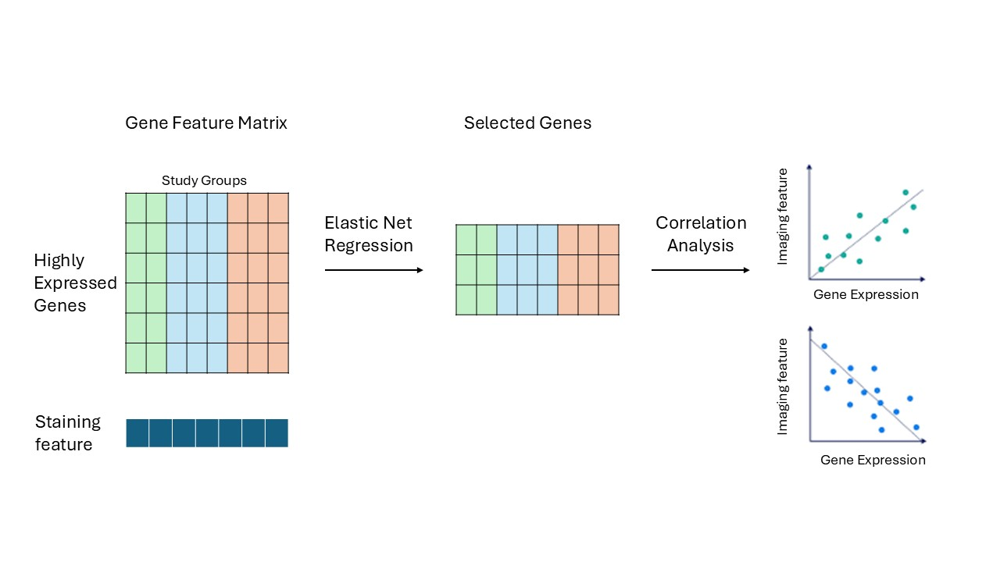

Linking Bulk RNA-seq Expression to Quantitative Tissue Measurements
This pipeline is designed for studies where you have bulk RNA-seq data from patient tissue samples and a quantitative phenotypic measurement from the same patients — think histological staining scores, cell size measurements, or any numeric clinical readout. The goal is to identify which genes best predict that measurement, then validate and visualize those associations across your patient groups.
The strategy has two stages. First, we use Elastic Net penalized regression to select a compact list of candidate genes from what could be tens of thousands of expressed genes. This step is essential because standard regression breaks down when you have far more features than samples, which is almost always the case in transcriptomics. Second, we validate those candidates with Pearson correlations run separately within each patient group, apply FDR correction, and produce publication-ready visualizations.

The pipeline runs as five R scripts in sequence. Everything produced in one script feeds directly into the next.
# From CRAN
install.packages(c("tidyverse", "readxl", "glmnet", "ggplot2", "circlize"))
# From Bioconductor
if (!requireNamespace("BiocManager", quietly = TRUE)) install.packages("BiocManager")
BiocManager::install(c("biomaRt", "ComplexHeatmap"))| File | Format | Description |
|---|---|---|
| Gene count matrix | .csv |
Rows = Ensembl gene IDs, columns = sample IDs. Must include a gene_biotype column. |
| Sample metadata | .xlsx |
One row per sample. Must include Sample, Region ("LV" / "RV"), and Etiology (your group labels). |
| Phenotypic data | .xlsx |
One row per patient. Must include Patient ID and one or more numeric outcome columns. |
Throughout the tutorial, patient groups are referred to as Group 1, Group 2, and Group 3, with corresponding R variables named group1_list, group2_list, and group3_list. Replace these with whatever group labels make sense for your study.
Similarly, the outcome variable is written as "your_outcome_column" in all code — replace it with the exact column name from your phenotypic data file (e.g., "Fibrosis_Percent" or "Cell_Area_um2").
This script does all the groundwork. It loads your raw data, applies quality control, and organizes everything into structured per-group lists that every downstream script depends on. Running this first — and making sure it completes without errors — saves a lot of headaches later.
library(readxl)
library(tidyverse)
library(dplyr)
# Load your phenotypic/staining data.
# If your Etiology column has verbose labels like "Group 1 (subtype A)",
# use fct_recode() to simplify them into short, consistent labels.
staining_data <- readxl::read_excel("path/to/staining_data.xlsx") %>%
mutate(Etiology = fct_recode(Etiology,
"Group 1" = "Group 1 (subtype A)",
"Group 2" = "Group 2 (subtype B)")) %>%
select(-Age, -Sex, -BMI) # drop any columns not needed downstream
# Load RNA-seq count matrix and sample metadata
raw_count <- read.csv("path/to/gene_count.csv")
metadata <- read_excel("path/to/metadata.xlsx")
# Remove flagged outlier samples if you have any.
# If not, just remove the filter() line entirely.
total_metadata <- metadata %>%
filter(!Sample %in% c("OUTLIER_SAMPLE_1", "OUTLIER_SAMPLE_2")) %>%
column_to_rownames(var = "Sample")
# Keep only protein-coding genes and align to the samples in metadata
total_count <- raw_count %>%
filter(gene_biotype == "protein_coding") %>%
column_to_rownames(var = "gene_id") %>%
select(all_of(rownames(total_metadata)))
rm(raw_count, metadata) # clean up memoryIf your study includes samples from more than one tissue region (e.g., left ventricle and right ventricle), this function carves the full dataset into region-specific subsets.
create_subset <- function(full_counts, full_meta, region_name) {
sub_meta <- full_meta %>% filter(Region == region_name)
sub_count <- full_counts %>% select(all_of(rownames(sub_meta)))
list(count = sub_count, metadata = sub_meta)
}
LV_data <- create_subset(total_count, total_metadata, "LV")
RV_data <- create_subset(total_count, total_metadata, "RV")Each output is a named list with $count (genes × samples matrix) and $metadata (sample information).
This is the most important preprocessing step. get_etiology_data() packages the staining measurements and count matrices together for a single patient group. It also applies a minimum expression filter — a gene must have at least 10 raw counts in every sample in that group to be retained. This cuts out genes that are too lowly expressed to be meaningful and keeps the model focused on reliably detected signal.
get_etiology_data <- function(etiology_name,
full_staining,
full_lv_list,
full_rv_list) {
# Strip region/group suffixes from sample IDs so they match across datasets.
# For example: "A0049_LV_Group1" becomes "A0049".
# Adjust the regex if your sample ID format is different.
clean_ids <- function(names_vec) str_extract(names_vec, "^[A-Z][0-9]+")
# Filter staining data for this group
sub_staining <- full_staining %>% filter(Etiology == etiology_name)
# LV data: filter, clean IDs, apply expression filter
lv_meta_sub <- full_lv_list$metadata %>% filter(Etiology == etiology_name)
lv_count_sub <- full_lv_list$count %>% select(all_of(rownames(lv_meta_sub)))
colnames(lv_count_sub) <- clean_ids(colnames(lv_count_sub))
rownames(lv_meta_sub) <- clean_ids(rownames(lv_meta_sub))
lv_count_sub <- lv_count_sub[apply(lv_count_sub, 1, min) >= 10, ]
# RV data: same process
rv_meta_sub <- full_rv_list$metadata %>% filter(Etiology == etiology_name)
rv_count_sub <- full_rv_list$count %>% select(all_of(rownames(rv_meta_sub)))
colnames(rv_count_sub) <- clean_ids(colnames(rv_count_sub))
rownames(rv_meta_sub) <- clean_ids(rownames(rv_meta_sub))
rv_count_sub <- rv_count_sub[apply(rv_count_sub, 1, min) >= 10, ]
list(
staining = sub_staining,
LV_metadata = lv_meta_sub,
LV_count = lv_count_sub,
RV_metadata = rv_meta_sub,
RV_count = rv_count_sub
)
}
# Build one list per group — replace the labels with your own Etiology values
group1_list <- get_etiology_data("Group 1", staining_data, LV_data, RV_data)
group2_list <- get_etiology_data("Group 2", staining_data, LV_data, RV_data)
group3_list <- get_etiology_data("Group 3", staining_data, LV_data, RV_data)After this script, you should have:
| Variable | What it contains |
|---|---|
staining_data | Full phenotypic data (all groups combined) |
LV_data, RV_data | Count matrix + metadata, split by region |
group1_list, group2_list, group3_list | Staining + count + metadata, split by group |
get_etiology_data(). Replacing total_count with a filtered version (keeping only your genes of interest) is all that's needed; the rest of the pipeline stays the same.
With the data organized, we can now run the model. Elastic Net is a penalized regression method that shrinks most gene coefficients to zero, keeping only the ones with genuine predictive value. It's well-suited here because we typically have thousands of candidate genes but only tens of samples — a situation where ordinary regression completely fails.
We use Leave-One-Out Cross-Validation (LOOCV) to find the optimal regularization strength. In small clinical cohorts, LOOCV makes the most efficient use of the available data and avoids overly optimistic model selection.
library(glmnet)
library(tidyverse)
library(biomaRt)
prepare_elastic_net <- function(data_list, region = "LV", target_col,
adjustment_cols = NULL) {
count_df <- if (region == "LV") data_list$LV_count else data_list$RV_count
meta_df <- if (region == "LV") data_list$LV_metadata else data_list$RV_metadata
# Log2-transform counts and transpose to samples x genes
X_genes <- t(log2(count_df + 1))
# Keep only samples present in both the RNA-seq and phenotypic data
common_samples <- intersect(rownames(X_genes), data_list$staining$`Patient ID`)
X_genes <- X_genes[common_samples, ]
# Extract the outcome variable
y <- data_list$staining %>%
filter(`Patient ID` %in% common_samples) %>%
pull(!!sym(target_col))
# Drop samples with missing outcome values
non_na_idx <- !is.na(y)
y <- y[non_na_idx]
X_genes <- X_genes[non_na_idx, ]
common_samples <- common_samples[non_na_idx]
# Optionally include covariates (e.g., Age). These will be scaled but NOT penalized.
if (!is.null(adjustment_cols) && length(adjustment_cols) > 0) {
adj_mat <- meta_df[common_samples, adjustment_cols, drop = FALSE]
adj_scaled <- scale(adj_mat)
X_final <- cbind(adj_scaled, X_genes)
} else {
X_final <- X_genes
}
list(X = X_final, y = y)
}run_elastic_net_full <- function(X, y, alpha = 0.1, n_adj = 0) {
# Adjustment covariates (first n_adj columns) get penalty = 0,
# so they're always kept regardless of regularization strength.
# All gene columns get penalty = 1.
p.fac <- c(rep(0, n_adj), rep(1, ncol(X) - n_adj))
set.seed(42)
custom_lambdas <- 10^seq(2, -5, length.out = 100)
cv_fit <- cv.glmnet(X, y,
alpha = alpha,
penalty.factor = p.fac,
lambda = custom_lambdas,
standardize = TRUE,
nfolds = nrow(X), # LOOCV
grouped = FALSE)
# Capture the cross-validation curve as a reusable plot object
pdf(NULL)
dev.control(displaylist = "enable")
plot(cv_fit)
title(paste("Cross-Validation (alpha =", alpha, ")"), line = 2.5)
cv_plot <- recordPlot()
dev.off()
# Extract non-zero coefficients at the optimal lambda
full_coefs <- coef(cv_fit, s = "lambda.min")
adj_names <- colnames(X)[seq_len(n_adj)]
coef_df <- data.frame(
Gene = rownames(full_coefs),
Coefficient = as.vector(full_coefs)
) %>%
filter(Coefficient != 0)
# Separate biological genes from the intercept and covariates
genes_to_map <- coef_df %>%
filter(!Gene %in% c("(Intercept)", adj_names))
# Resolve Ensembl IDs to human-readable gene symbols via Ensembl
if (nrow(genes_to_map) > 0) {
mart <- useEnsembl(biomart = "genes", dataset = "hsapiens_gene_ensembl")
gene_map <- getBM(
attributes = c("ensembl_gene_id", "external_gene_name"),
filters = "ensembl_gene_id",
values = genes_to_map$Gene,
mart = mart
)
coef_df <- coef_df %>%
left_join(gene_map, by = c("Gene" = "ensembl_gene_id")) %>%
mutate(Gene_Symbol = ifelse(!is.na(external_gene_name),
external_gene_name, Gene))
} else {
coef_df$Gene_Symbol <- coef_df$Gene
}
coef_df <- coef_df %>%
dplyr::select(Gene, Gene_Symbol, Coefficient) %>%
arrange(desc(abs(Coefficient)))
list(model = cv_fit, plot = cv_plot, coeffs = coef_df)
}# Prepare predictors for Group 1, LV, adjusting for Age
prep <- prepare_elastic_net(
data_list = group1_list,
region = "LV",
target_col = "your_outcome_column",
adjustment_cols = "Age" # set to NULL if you have no covariates
)
# Fit the model
results <- run_elastic_net_full(
X = prep$X,
y = prep$y,
alpha = 0.05,
n_adj = 1 # must match the number of adjustment_cols used above
)
print(results$coeffs) # table of selected genes and their coefficients
print(results$plot) # cross-validation curve — inspect this to check model fitUnderstanding the key parameters:
| Parameter | What it controls |
|---|---|
alpha |
Mix between Ridge (0) and LASSO (1). Values near 0 (e.g., 0.05–0.1) group correlated genes together rather than arbitrarily dropping one. Start there and adjust based on your data. |
n_adj |
Number of adjustment covariates at the start of X. Must match length(adjustment_cols) from prepare_elastic_net. Use 0 if no covariates. |
lambda.min |
The regularization strength that minimized CV error — used automatically to extract the final set of non-zero coefficients. |
results$coeffs is a data frame of selected genes with Ensembl IDs, gene symbols, and regression coefficients sorted by effect size. This is what feeds directly into Script 3.
Elastic Net gives us a shortlist of candidate genes, but we want to know how each one actually correlates with the outcome — and whether that relationship holds across all of your patient groups or is specific to one. This script runs Pearson correlations for every selected gene within each group separately, then applies Benjamini–Hochberg FDR correction.
library(tidyverse)
library(biomaRt)
run_comparative_correlation <- function(data_list, target_genes,
target_var, region = "LV") {
count_df <- if (region == "LV") data_list$LV_count else data_list$RV_count
# Only test genes that actually exist in this group's count matrix
available_genes <- intersect(target_genes, rownames(count_df))
common_samples <- intersect(colnames(count_df), data_list$staining$`Patient ID`)
count_subset <- count_df[available_genes, common_samples, drop = FALSE]
staining_subset <- data_list$staining %>% filter(`Patient ID` %in% common_samples)
# Log-transform expression and z-score both variables before correlating
expr_matrix_log <- as.matrix(log2(count_subset + 1))
target_vec <- staining_subset %>% pull(!!sym(target_var))
target_scaled <- as.vector(scale(target_vec))
results <- map_dfr(available_genes, function(gene) {
gene_expr_scaled <- as.vector(scale(expr_matrix_log[gene, ]))
cor_test <- cor.test(gene_expr_scaled, target_scaled, method = "pearson")
data.frame(
Gene = gene,
Mean_Expression_Raw = mean(as.numeric(count_subset[gene, ])),
Pearson_R = as.numeric(cor_test$estimate),
P_Value = cor_test$p.value
)
})
# Attach gene symbols
mart <- useEnsembl(biomart = "genes", dataset = "hsapiens_gene_ensembl")
gene_symbols <- getBM(
attributes = c("ensembl_gene_id", "external_gene_name"),
filters = "ensembl_gene_id",
values = available_genes,
mart = mart
)
results %>%
left_join(gene_symbols, by = c("Gene" = "ensembl_gene_id")) %>%
rename(Gene_Symbol = external_gene_name) %>%
mutate(Adj_P_Value = p.adjust(P_Value, method = "fdr")) %>%
dplyr::select(Gene, Gene_Symbol, Mean_Expression_Raw,
Pearson_R, P_Value, Adj_P_Value) %>%
arrange(P_Value)
}
# Run for each group using the genes selected by Elastic Net
group1_corr_results <- run_comparative_correlation(
group1_list, results$coeffs$Gene, "your_outcome_column", "LV")
group2_corr_results <- run_comparative_correlation(
group2_list, results$coeffs$Gene, "your_outcome_column", "LV")
group3_corr_results <- run_comparative_correlation(
group3_list, results$coeffs$Gene, "your_outcome_column", "LV")Each output data frame has columns: Gene, Gene_Symbol, Mean_Expression_Raw, Pearson_R, P_Value, Adj_P_Value, sorted by raw p-value.
With correlation results from all three groups in hand, we can now visualize them together. The heatmap gives you an immediate read on which genes correlate strongly (and in which direction) across groups, and where those correlations are statistically significant.
library(ComplexHeatmap)
library(circlize)
library(tidyverse)
# Combine results from all groups into one long data frame
all_results <- list(
"Group 1" = group1_corr_results,
"Group 2" = group2_corr_results,
"Group 3" = group3_corr_results
) %>%
bind_rows(.id = "Etiology") %>%
mutate(Etiology = factor(Etiology, levels = c("Group 1", "Group 2", "Group 3")))
# Choose which genes to display — pick one option below:
# Option A: all genes that pass FDR in any group (good for a focused gene set)
genes <- all_results %>%
filter(Adj_P_Value < 0.05) %>%
pull(Gene_Symbol)
# Option B: top 20 genes by absolute r in Group 1 (useful when many genes pass FDR)
genes <- all_results %>%
filter(Adj_P_Value < 0.05, Etiology == "Group 1") %>%
top_n(20, abs(Pearson_R)) %>%
pull(Gene_Symbol)
# Build wide matrices: one for r-values, one for FDR-adjusted p-values
cor_mat <- all_results %>%
filter(Gene_Symbol %in% genes) %>%
dplyr::select(Etiology, Gene_Symbol, Pearson_R) %>%
pivot_wider(names_from = Gene_Symbol, values_from = Pearson_R) %>%
column_to_rownames("Etiology") %>%
as.matrix()
cor_mat[is.na(cor_mat)] <- 0 # missing = no correlation
pval_mat <- all_results %>%
filter(Gene_Symbol %in% genes) %>%
dplyr::select(Etiology, Gene_Symbol, Adj_P_Value) %>%
pivot_wider(names_from = Gene_Symbol, values_from = Adj_P_Value) %>%
column_to_rownames("Etiology") %>%
as.matrix()
pval_mat[is.na(pval_mat)] <- 1 # missing = not significant
# Fix row order; sort columns by correlation strength in Group 1.
# Change "Group 1" to whichever group you want to anchor the column order to.
row_order_names <- c("Group 1", "Group 2", "Group 3")
col_order_names <- names(sort(cor_mat["Group 1", ], decreasing = TRUE))
col_fun <- colorRamp2(c(-1, 0, 1), c("#2166ac", "white", "#b2182b"))
ht <- Heatmap(
cor_mat,
name = "Correlation (r)",
col = col_fun,
width = ncol(cor_mat) * unit(10, "mm"),
height = nrow(cor_mat) * unit(10, "mm"),
cluster_rows = FALSE,
row_order = row_order_names,
cluster_columns = FALSE,
column_order = col_order_names,
column_names_side = "bottom",
column_names_rot = 45,
column_names_gp = gpar(fontface = "bold", fontsize = 14),
row_names_gp = gpar(fontface = "bold", fontsize = 14),
# Draw a black square inside each cell — size encodes significance
cell_fun = function(j, i, x, y, width, height, fill) {
curr_row <- row_order_names[i]
curr_col <- col_order_names[j]
p_val <- pval_mat[curr_row, curr_col]
s <- ifelse(p_val < 0.001, 0.70,
ifelse(p_val < 0.01, 0.45,
ifelse(p_val < 0.05, 0.25, 0)))
if (s > 0)
grid.rect(x, y,
width = width * s,
height = height * s,
gp = gpar(fill = "black", col = NA))
}
)
# Significance legend explaining the square sizes
sig_lgd <- Legend(
title = "FDR",
labels = c("p < 0.001", "p < 0.01", "p < 0.05"),
type = "points",
pch = 15,
size = unit(c(0.7, 0.45, 0.25) * 8, "mm"),
legend_gp = gpar(col = "black")
)
draw(ht, annotation_legend_list = list(sig_lgd))cor_mat["Group 1", ]). If you want to anchor the ordering to a different group, change that line accordingly.
The heatmap gives an overview; scatter plots let you inspect individual genes. For any gene of interest, this script produces a single panel with all groups overlaid — each group gets its own color, regression line, and annotated r and p-values.
One thing worth noting: the expression filter from Script 1 (requiring ≥ 10 counts in every sample) may have excluded some genes from the model that you still want to visualize. The data-loading function here deliberately skips that filter, so any gene in your count matrix can be plotted.
library(ggplot2)
library(tidyverse)
library(biomaRt)
get_etiology_data_for_scatter <- function(etiology_name,
full_staining,
full_lv_list,
full_rv_list) {
clean_ids <- function(names_vec) str_extract(names_vec, "^[A-Z][0-9]+")
sub_staining <- full_staining %>% filter(Etiology == etiology_name)
lv_meta_sub <- full_lv_list$metadata %>% filter(Etiology == etiology_name)
lv_count_sub <- full_lv_list$count %>% dplyr::select(all_of(rownames(lv_meta_sub)))
colnames(lv_count_sub) <- clean_ids(colnames(lv_count_sub))
rownames(lv_meta_sub) <- clean_ids(rownames(lv_meta_sub))
# No expression filter here — keep all genes for plotting
rv_meta_sub <- full_rv_list$metadata %>% filter(Etiology == etiology_name)
rv_count_sub <- full_rv_list$count %>% dplyr::select(all_of(rownames(rv_meta_sub)))
colnames(rv_count_sub) <- clean_ids(colnames(rv_count_sub))
rownames(rv_meta_sub) <- clean_ids(rownames(rv_meta_sub))
list(
staining = sub_staining,
LV_metadata = lv_meta_sub,
LV_count = lv_count_sub,
RV_metadata = rv_meta_sub,
RV_count = rv_count_sub
)
}
# Build the list for all groups (no expression filter)
data_full_list <- lapply(
setNames(c("Group 1", "Group 2", "Group 3"),
c("Group 1", "Group 2", "Group 3")),
function(etio) {
get_etiology_data_for_scatter(etio, staining_data, LV_data, RV_data)
}
)plot_gene_correlation_combined <- function(data_full_list, target_gene_id,
target_var, region = "LV") {
# Resolve Ensembl ID to gene symbol for axis labeling
mart <- useEnsembl(biomart = "genes", dataset = "hsapiens_gene_ensembl")
gene_info <- getBM(
attributes = c("ensembl_gene_id", "external_gene_name"),
filters = "ensembl_gene_id",
values = target_gene_id,
mart = mart
)
gene_symbol <- if (nrow(gene_info) > 0) gene_info$external_gene_name[1] else target_gene_id
# Extract log2-transformed expression and staining values for each group
get_group_df <- function(group_list, group_name) {
count_df <- if (region == "LV") group_list$LV_count else group_list$RV_count
if (!(target_gene_id %in% rownames(count_df))) return(NULL)
expr <- log2(as.numeric(count_df[target_gene_id, ]) + 1)
data.frame(Patient_ID = colnames(count_df), Expression = expr) %>%
inner_join(group_list$staining, by = c("Patient_ID" = "Patient ID")) %>%
dplyr::select(Expression, !!sym(target_var)) %>%
mutate(Group = group_name)
}
combined_df <- bind_rows(
get_group_df(data_full_list[["Group 1"]], "Group 1"),
get_group_df(data_full_list[["Group 2"]], "Group 2"),
get_group_df(data_full_list[["Group 3"]], "Group 3")
) %>%
mutate(Group = factor(Group, levels = c("Group 1", "Group 2", "Group 3"))) %>%
drop_na(Expression, !!sym(target_var))
# Per-group Pearson r and p-value, with FDR correction across groups
stats_df <- combined_df %>%
group_by(Group) %>%
summarize(
r = cor(Expression, !!sym(target_var), method = "pearson", use = "complete.obs"),
p = if (n() > 2) cor.test(Expression, !!sym(target_var))$p.value else 1
) %>%
ungroup() %>%
mutate(
padj = p.adjust(p, method = "fdr"),
label = paste0(Group, ": p=", signif(p, 3), ", r=", round(r, 2)),
y_pos = seq(
max(combined_df[[target_var]], na.rm = TRUE),
by = -diff(range(combined_df[[target_var]], na.rm = TRUE)) * 0.06,
length.out = n()
)
)
ggplot(combined_df, aes(x = Expression, y = !!sym(target_var), color = Group)) +
geom_point(alpha = 0.5, size = 3) +
geom_smooth(method = "lm", se = FALSE, linewidth = 1.2, na.rm = TRUE) +
geom_text(
data = stats_df,
aes(x = -Inf, y = y_pos, label = label, color = Group),
hjust = -0.1, vjust = 1, size = 3.8, fontface = "bold", show.legend = FALSE
) +
scale_color_manual(values = c(
"Group 1" = "#de425b", # red — change to your preference
"Group 2" = "#329db3", # teal
"Group 3" = "#488f31" # green
)) +
theme_bw() +
labs(
x = paste(gene_symbol, "Normalized Expression (", region, ")"),
y = target_var
) +
theme(
legend.position = "none",
axis.title = element_text(size = 11, face = "bold"),
axis.text = element_text(size = 11, face = "bold"),
plot.title = element_text(face = "bold")
)
}
# Generate a plot — replace the Ensembl ID and outcome column with your own
plot_gene_correlation_combined(
data_full_list,
target_gene_id = "ENSG00000000000", # replace with your gene of interest
target_var = "your_outcome_column",
region = "LV"
)#de425b), Group 2 is teal (#329db3), Group 3 is green (#488f31). Edit scale_color_manual() to use your preferred palette.
| Variable | Produced in | Used in |
|---|---|---|
staining_data |
Preprocessing | Elastic Net, Scatter Plot |
LV_data, RV_data |
Preprocessing | Elastic Net, Scatter Plot |
group1_list, group2_list, group3_list |
Preprocessing | Elastic Net, Correlation Analysis |
results$coeffs |
Elastic Net | Correlation Analysis |
group1_corr_results, group2_corr_results, group3_corr_results |
Correlation Analysis | Heatmap |